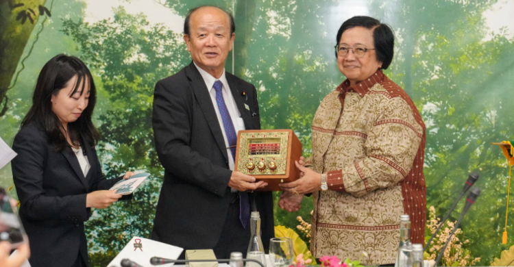

Apa itu Kerja Sama Bilateral?
Bilateral adalah salah satu jenis kerja sama internasional atau antar negara yang merupakan kerja sama atau hubungan antara dua negara dengan tujuan saling menguntungkan kedua belah pihak. Sampai saat ini, Indonesia telah menjalin kerjasama bilateral dengan 162 negara sejak Indonesia memproklamasikan kemerdekaanya pada tanggal 17 Agustus 1945, serta satu teritori khusus yang berupa non-self governing territory. Kerja Sama Bilateral dapat terwujud dari berbagai bidang, antara lain; Politik, Ekonomi, Sosial Budaya, Pendidikan, Pertahanan (militer), Transportasi dan Teknologi.
Tujuan Kerja Sama Bilateral
Tujuan umum: Memelihara kepentingan nasional, Memelihara perdamaian,
Meningkatkan
kesejahteraan antar bangsa dalam berbagai bidang.
Tujuan khusus: Untuk mendapatkan bahan
kebutuhan
yang
dibutuhkan ketika negara asal tidak dapat memproduksi bahan tersebut (ekonomi), untuk memperoleh ilmu
politik dan pelatihan militer tertentu (politik dan pertahanan), untuk memperoleh investor dari suatu
negara (ekonomi)
Contoh Kerja Sama Bilateral dengan Indonesia
1. Kerja sama Indonesia dengan Prancis : Joint Working Group Indonesia-Prancis ke-12 tahun 2024. JWG kali ini (Joint Working Group) bertema "Fostering Indonesia-French Higher Education, Research, and Innovation Partnership for Advance and Sustainable Future." Selain pendidikan dan riset kerjasama ini juga mewujudkan pengajaran tingkat PHD mengenai sumber daya manusia dalam mengolah dan mengembangkan potensi sumber daya laut maupun darat yang sangat mengarah ke SDGs nomor 13 yaitu Tindakan terhadap Perubahan Iklim dengan komitmen untuk melestarikan lingkungan, memanfaatkan energi terbarukan, dan mengoptimalkan sumber daya secara efisien, terutama penanganan terhadap perubahan iklim. Dalam kerjasama kali ini mencakup berbagai riset pendidikan, pengajaran, dan kolaborasi menggunakan konsep serta teknologi mengenai pentingnya mewujudkan goal SDGs ini untuk global dan bagi generasi mendatang. Dari kerja sama ini, Indonesia memperoleh manfaat yaitu pengetahuan akan teknologi, cara mengolah energi terbarukan, dan pendidikan yang diperoleh dari riset ilmiah. Selain itu, negara Indonesia dan Prancis dapat membangun hubungan yang kuat dari kerja sama ini, sehingga dapat mewujudkan tujuan bersama yaitu menyelesaikan isu-isu tersebut dan membangun dunia yang lebih baik.
Work Shop dan diskusi delegasi JWG di UNESA
2. Kerja sama Indonesia dengan Jepang : Indonesia dan Jepang bekerja sama dalam Teknologi dan Energi yang Terbarukan. Jepang telah lama menjadi mitra penting Indonesia dalam hal teknologi energi terbarukan dan pengurangan emisi karbon. Lalu, Indonesia dan Jepang memutuskan untuk bekerja sama untuk mengatasi perubahan tersebut. Hal ini ditandai dengan pertemuan Menteri Lingkungan Hidup dan Kehutanan (LHK) Siti Nurbaya dengan Menteri Lingkungan Hidup Jepang Yagi Tetsuta, di kantor Kementerian Lingkungan Hidup dan Kehutanan (KLHK), Jakarta, Rabu (21/8/2024). Pertemuan tersebut membahas mengenai sebuah komitmen kerja untuk mengimplementasikan dalam aksi kerja sama dalam penanganan perubahan iklim, seperti upaya dalam mengkonservasi hutan dana pengelolaan limbah.
Kantor Kementerian Lingkungan Hidup dan Kehutanan (KLHK), Jakarta, Rabu 21 Agustus 2024